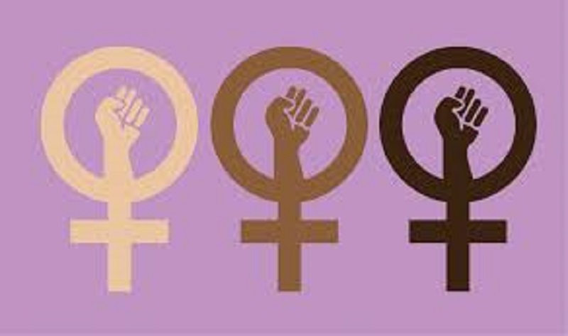

Feminism Analysis
Introduction
Feminism is a hot topic over decades. A lot of organizations put efforts on improving females' interests through different kind of aspects like job opportunity, social status, economical status, etc. However, up to now, even women's consumption capcaity is kept increasing, woman's right is improved or not is still a problem and easily gives rise to dispution.
In this project, I want to explore this question by visualizing the data about female's working status from different respects in the world over last years. In this way, users can easily draw conclusions by themselves about whether feminism is successful or not.
The project will give users a comparison between female and male's working status in agriculture, self-employment, industry and service. I will show the change over years in different countries. In this way, we can see if women have enough power in today's world.
Labor force participation from aged 24-54.
The below map shows that for age group 24-54, percentage of female and male labor to their total population. The users can see the difference between them and change of the labor force participation over years in the whole world by clicking the tab. The raw data is from gapminder(https://www.gapminder.org/data/). I chose the range from 2010 to 2019 as analysis target.

Findings
From the map, we can see that female's labor force participation in middle east is very low. For example, Iran's female participation to total femlale population is only 19.9% but male's participation is 88.4%. Even in 2019, the female's particpation in Iran is still 21%. The interesting thing is that in 2019, male's labor participation is derceased little compared to 2010 and female's participation is increased in the whole world. The reason behind this case worth consideration.
Data Sources
The main data source for this project is the work database provides by gapminder. [source link]April 2020 @Changhao Ying
The George Washington University, Data science